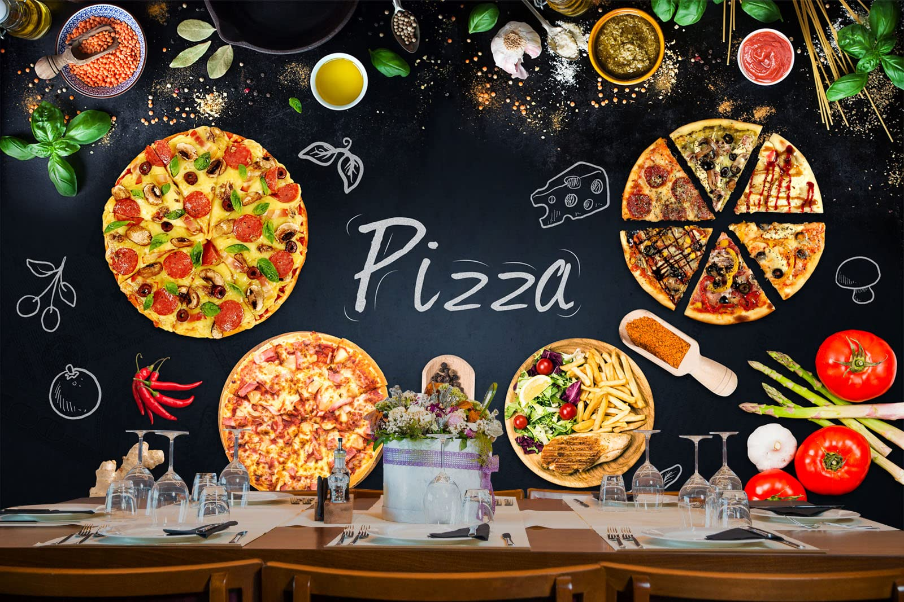

My Job Experience
Here are some of the positions I've held during my career and academic journey:
Operator - Lopez Jumpers
Duration: March 2019 - Current
Responsibilities: Installed a diverse range of different types of inflatable structures, including balloons, bouncy houses, water slides for numerous events. Delivered tables, chairs, and even karaoke equipment to clients, meeting their specific requirements. Managed the cleaning and maintenance of all equipment and materials to uphold quality standards..
Skills Used: Customer Service, Inventory Management, Financial Management

Video Editor - Gold Monkey Jewerly
Duration: July 2023 - Current
Responsibilities: As a lead video editor at Gold Monkey Jewerly, I oversee the entire video production process, from conceptualization to editing and final output. I create engaging content for social media platforms, promotional videos, and other marketing materials. My role also involves recording and capturing footage that showcases the intricate details of our jewerly deisgns. I'm also responsible for designing custome pendants and creating visuals.
Skills Used: Video Editing, Graphic Design, Conent Creatrion, Problem Solving
The link below shows another video that I edited that was published on YouTube. You can watch it here:
Watch on YouTubePappas Pizzeria
Duration: March 2021 - July 2021
Responsibilities: At Pappas Pizzeria, I perfromed a dual role where I was responsible for preparing and cooking a veriety of pizzas, ensuring they were made to customer specifications and served hot and fresh. I also took on the responsibility of delivering orders to customers. In addition, I assisted with inventory management, restocking ingredients, and maintaning a clean work environment.
Skills Used: Cooking, Customer Sercice, Driving, Time Management
